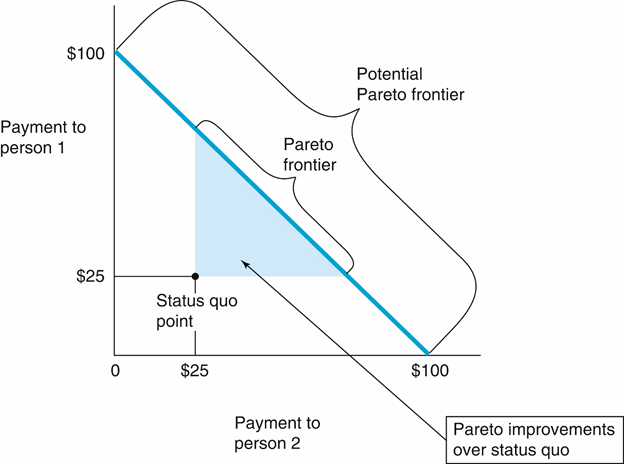
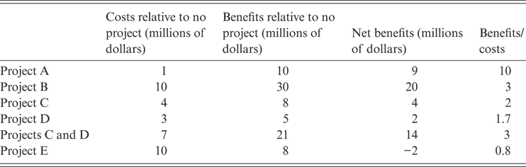

2 Conceptual Foundations of CBA
Today’s Goals:
- Understand what a CBA is and how it aims to increase social welfare.
- Understand the limitations of CBA and its underlying moral calculus
- For the final project, be prepared to define the purpose of our CBA (Step 1), specify alternatives (Step 2), assign standing (Step 3), and make a recommendation (Step 10).
- Discuss our first CBA of the Day.
- Introduce some alternative approaches.
- If time remaining, work on problem sets.
This week we’ll think deeply about what a cost-benefit analysis is and why we’re doing it. In so doing, we should be well-prepared to complete Steps 1, 2, 3, and 10 in the Boardman Ten Step Process.
2.1 CBA as a Framework for Assessing Efficiency
CBA at the individual-level is pretty straightforward (conceptually). Things get tricky when we try to evaluate costs and benefits for society as a whole.
2.1.1 Pareto Efficiency vs. Kaldor-Hicks Efficiency

Pareto Improvement: No one is made worse off. At least one person is made better off.
Kaldor-Hicks Improvement: Some people may be made worse off. But we could imagine some set of transfers from those made better off to those made worse off so that, post-transfers, no one is worse off (a potential Pareto Improvement).
Pareto Efficient: Impossible to help someone without hurting someone else
Kaldor-Hicks Efficient: Impossible to help someone without hurting someone else more.
Policies that pass a cost benefit analysis are those where the sum of social benefits is greater than the sum of social costs (\(B>C\) ). This is, by definition, a Kaldor-Hicks improvement.
Why use Kaldor-Hicks efficiency as our standard instead of Pareto efficiency?
- Pareto efficiency an impossibly high bar.
- But it does have the nice feature that we don’t have to worry about interpersonal comparisons of utility.
Two foundational concepts for when we think about social welfare in a CBA: WTP and opportunity costs.
2.1.2 Willingness To Pay (WTP)
They say you can’t compare apples and oranges. Well, in a CBA we have to find some way to do it!
The fundamental move in a cost-benefit analysis is to convert social welfare into monetary equivalents.

- Inverse is “willingness to accept” (WTA): how much would you need to be paid in order to accept the cost of a policy?
If you sum up all the WTP and WTA values, the result is the social benefit \((B)\) of the program.
Exercise 1:
What is your WTP for the following goods?
- One golden delicious apple.
- A guarantee that you wouldn’t get the flu this season.
- Unlimited access to Forest Park.
2.1.3 Opportunity Costs
Any time you spend money, there is an opportunity cost associated with that expenditure. Every dollar you spend on Program X is a dollar that couldn’t go to Program Y. (Or a dollar that you couldn’t just give to a random person in need.) The opportunity cost of an expenditure is the foregone benefit that would have come from spending the money on the best possible alternative.
Bastiat’s Parable of the Broken Window (1850)
Have you ever witnessed the anger of the good shopkeeper, James Goodfellow, when his careless son has happened to break a pane of glass? If you have been present at such a scene, you will most assuredly bear witness to the fact that every one of the spectators, were there even thirty of them, by common consent apparently, offered the unfortunate owner this invariable consolation – “It is an ill wind that blows nobody good. Everybody must live, and what would become of the glaziers if panes of glass were never broken?”
Now, this form of condolence contains an entire theory, which it will be well to show up in this simple case, seeing that it is precisely the same as that which, unhappily, regulates the greater part of our economical institutions.
Suppose it cost six francs to repair the damage, and you say that the accident brings six francs to the glazier’s trade – that it encourages that trade to the amount of six francs – I grant it; I have not a word to say against it; you reason justly. The glazier comes, performs his task, receives his six francs, rubs his hands, and, in his heart, blesses the careless child. All this is that which is seen.
But if, on the other hand, you come to the conclusion, as is too often the case, that it is a good thing to break windows, that it causes money to circulate, and that the encouragement of industry in general will be the result of it, you will oblige me to call out, “Stop there! Your theory is confined to that which is seen; it takes no account of that which is not seen.”
It is not seen that as our shopkeeper has spent six francs upon one thing, he cannot spend them upon another. It is not seen that if he had not had a window to replace, he would, perhaps, have replaced his old shoes, or added another book to his library. In short, he would have employed his six francs in some way, which this accident has prevented.
If you sum up all the opportunity costs of a program, the result is the social cost \((C)\).
\(NB = B - C\)
2.1.4 Net Benefits or Cost-Benefit Ratio?

2.2 Some Fundamental Problems
Using WTP as a measure of social benefits is not a trivial decision! There are five broad issues:
2.2.1 Arrow’s Theorem
Fundamental problem. What does it mean to have a social preference?

X = Pizza (12), Y = Tacos (10), Z = Sushi (9)
Condorcet criterion (pairwise majorities) does not produce a transitive social ordering. How do you conduct an analysis of social costs and benefits if society doesn’t have clear preferences over policies?
Arrow (1951) shows that transitive social choice functions cannot simultaneously be (a) unanimous, (b) democratic, and (c) satisfy independence of irrelevant alternatives (IIA). So we must make some restrictive assumptions about preferences in order for WTP to always yield a coherent social ordering.1
2.2.2 WTP Depends on Distribution of Wealth
Using willingness to pay as a measure of social benefits faces a straightforward problem: rich people are generally willing to pay more for things than poor people. Consider the following two policies:
Policy A: Give a rich person a puppy.
Policy B: Give a poor person a puppy.
CBA will (typically) assign higher net benefits to Policy A, because the rich person would be willing to pay more for the puppy.
Or consider a policy that transfers $10 to a rich person at the cost of $9 from a poor person. The latter probably values that money more (higher marginal utility of money), so Kaldor-Hicks improvement fails to increase aggregate utility (unless we actually make the transfers necessary to produce Pareto improvement).
- Added critique: the concept of Pareto efficiency itself depends on the status quo distribution of wealth.
- (Note: Kaldor-Hicks does not.)
2.2.3 Whose WTP should be considered (standing)?
Some Discussion Questions:
- Should you include the perspectives of people outside of your jurisdiction?
- Suppose you’re working for a municipal government. Should you adopt a local perspective, considering only the benefits/costs that accrue to residents of your city?
- Or a more universalistic perspective?
- The latter is more valuable. The former is (sadly?) more common.
- CBA is anthropocentric. Only the WTP of people counts.
- Should we exclude “socially unacceptable preferences”? Who decides what is socially unacceptable?
- Haiti example: if husbands have negative WTP for programs that save their wives time, should those preferences be given standing in a CBA?
- Should future generations receive standing?
2.2.4 How can you put a price on some things?
Discussion Topic:
Many CBAs require putting a monetary value on lives saved (the value of a statistical life, VSL). How does that make you feel?
What if you need to put a value on unique or sacred things? Are some goods “priceless”?
2.2.5 Does CBA undermine democracy??
Should we be putting technocrats in charge instead of citizens?
Boardman has a good counterpoint here. On a day-to-day basis, citizens aren’t actually in charge. There’s a benefit to having public servants consider diffuse costs/benefits rather than the alternative (considering only the concentrated interests of politically influential groups).
2.3 CBA of the Day
TBD
2.4 Alternative Approaches
If you are ever asked to evaluate a program, there will be powerful interest groups pushing you not to do a CBA. (This is the point that Boardman is making in Section 1.4 about “guardians” and “spenders”).
2.4.1 Budget Impact Analysis

Purely looks at revenues and costs. Unconcerned with social benefits more broadly.
Hard-nosed way to evaluate projects.
Can be very useful to conduct in some cases! If, for instance, a project needs to be revenue-neutral, then it is essential to conduct a BIA in addition to a CBA.
- The good news is that it requires almost no additional work. You already have all the cost and revenue figures if you’ve done a CBA.
2.4.2 Cost-Effectiveness Analysis
If you are unable or unwilling to monetize the benefits of a program, then CEA is for you! The cost effectiveness of a program is its impact divided by its costs.
2.4.3 Multigoal Analysis
What if you’re doing a CEA but there are multiple impacts? How do you trade off one versus the other? In a CBA, you do it through monetization. Absent monetization, you need some subjective standard through which to evaluate the (multiple) benefits of your program. See Section 2.5.2 in Boardman for more detail.
2.4.4 Distributionally-Weighted CBA
Just like a CBA, except you consider the distribution of benefits and costs as well, by placing weights on the welfare of each group. The choice of weights is, of course, subjective.
\(NB = \sum \lambda_i (B_i - C_i)\)
2.4.5 What To Do?
Boardman’s advice is to start with a conventional cost-benefit analysis. That way, if you do conduct an alternative analysis, you can compare the two results and see how sensitive your recommendation is to your choice of assumptions.
Namely, we must assume well-behaved utility functions with declining marginal utility that we can aggregate into market demand by summing. Don’t worry too much about this; it’s the technical jargon that underlies the pretty supply and demand figures we’ll look at in Week 3.↩︎